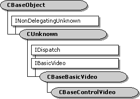

description: The CBaseBasicVideo class implements the IDispatch methods of the IBasicVideo interface. The remaining IBasicVideo methods are left as pure virtual methods, and must be implemented by a derived class. ms.assetid: 58396c81-8a06-4b82-b278-a98573e9d5b3 title: CBaseBasicVideo class (Ctlutil.h) ms.topic: reference ms.date: 4/26/2023 topic_type:
[The feature associated with this page, DirectShow, is a legacy feature. It has been superseded by MediaPlayer, IMFMediaEngine, and Audio/Video Capture in Media Foundation. Those features have been optimized for Windows 10 and Windows 11. Microsoft strongly recommends that new code use MediaPlayer, IMFMediaEngine and Audio/Video Capture in Media Foundation instead of DirectShow, when possible. Microsoft suggests that existing code that uses the legacy APIs be rewritten to use the new APIs if possible.]

The CBaseBasicVideo class implements the IDispatch methods of the IBasicVideo interface. The remaining IBasicVideo methods are left as pure virtual methods, and must be implemented by a derived class.
The IDispatch methods in this class are standard implementations, and are not described in detail here.
| Requirement | Value |
|---|---|
| Header | Ctlutil.h (include Streams.h) |
| Library | Strmbase.lib (retail builds); Strmbasd.lib (debug builds) |